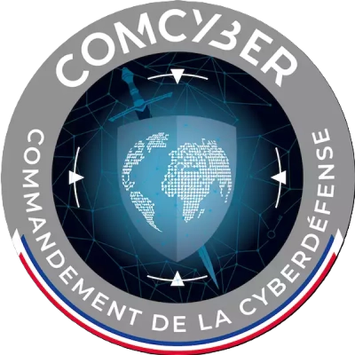

Passe Ton Hack d’Abord est un challenge national français de cybersécurité pour les lycéens et étudiants organisé par le Commandement de la cyberdéfense (COMCYBER) du ministère des Armées et la Direction générale de l’enseignement scolaire du ministère de l’Éducation nationale. C’est un concours de type Capture The Flag (CTF) : une compétition en ligne où des équipes (de 2 à 6 personnes) résolvent des défis liés à la cybersécurité un peu comme des « missions » où on doit trouver des failles, déchiffrer des codes ou analyser des systèmes pour récupérer des « flags » (des réponses secrètes) et marquer des points.